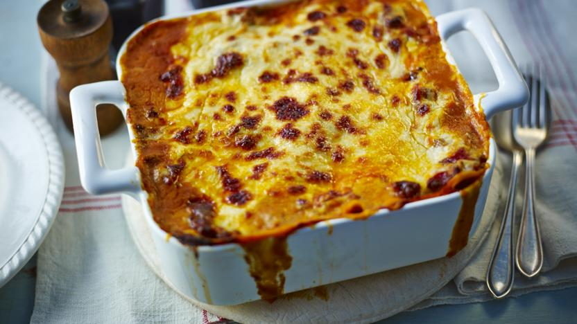

Lasagne al forno

Mads Jensen har udgivet denne opskrift
This is Mads' classic lasagne recipe which has been perfected over the years. For the best results leave the lasagne to stand for six hours before cooking. Each serving provides 861 kcal, 50g protein, 56g carbohydrates (of which 17g sugars), 47g fat (of which 23g saturates), 5.5g fibre and 1.4g salt.
 Less than 30 mins
Less than 30 mins- Italian
 Easy
Easy- Can be frozen
Ingredients
4 servings
For the ragu
- 2 tbsp olive oil
- 900g/2lb beef mince
- 2 onions, roughly chopped
- 4 sticks celery, finely chopped (optional)
- 2 garlic cloves, crushed
- 2 level tbsp plain flour
- 150ml/¼ pint beef stock
- 1 tbsp redcurrant jelly or 1 tsp caster sugar (optional)
- 3 tbsp tomato purée
- 1 tbsp chopped thyme
- 2 x 400g tins chopped tomatoes
For the white sauce
- 50g/2oz butter
- 50g/2oz plain flour
- 750ml/1¼ pints hot milk
- 2 tsp Dijon mustard
- 50g/2oz Parmesan, finely grated
- salt and freshly ground black pepper
For the lasagne
- 12 lasagne sheets
- 75g/3oz mature cheddar, grated

 Less than 30 mins
Less than 30 mins- Italy
- Easy
Foodstory
I had a gap year in Italy, where i stayed with a family, who loved to cook traditional Italian food. One of those recipes was a lasagna produced with herbs from their garden. This lasagna is based on all the best produce from the southern region of Italy, where i stayed and reminds me of a warm afternoon overlooking the Meditarrinian sea.
Method
- Preheat the oven to 160C/140C Fan/Gas 3.
- For the ragu, heat a large ovenproof frying pan or casserole until hot and add the oil. Cook the mince until browned all over. Remove from the heat and transfer to a plate.
- Add the onion, celery (if using) and garlic to the pan and cook until softened. Return the meat to the pan and stir in the flour. Add the stock and bring to the boil. Add the redcurrant jelly (or sugar), tomato purée and thyme, then stir well.
- Stir in the tinned tomatoes. Bring to the boil again, cover with a lid (or kitchen foil) and simmer in the oven for 1–1½ hours, or until the beef is tender.
- For the white sauce, melt the butter in a saucepan. Add the flour and cook over the heat for one minute. Gradually whisk in the hot milk, whisking until thickened. Add the Dijon mustard and Parmesan and season generously with salt and pepper.
- For the lasagne, put one third of the meat sauce in the base of a 2.3 litre/4 pint shallow ovenproof dish. Spoon one third of the white sauce on top. Season with salt and pepper. Arrange one layer of lasagne sheets on top.
- Spoon half of the remaining meat sauce on top and then half of the white sauce. Season with salt and pepper. Put another layer of lasagne sheets on top, then the remaining meat sauce and remaining white sauce. Sprinkle over the cheddar.
- Cover and place in the fridge for 6 hours before cooking (so that the pasta can start to soften and absorb some of the liquid from the sauces).
- Preheat the oven to 200C/180C Fan/Gas 6.
- Cook in the middle of the oven for about 45 minutes or until golden brown on top, bubbling around the edges and the pasta is soft.